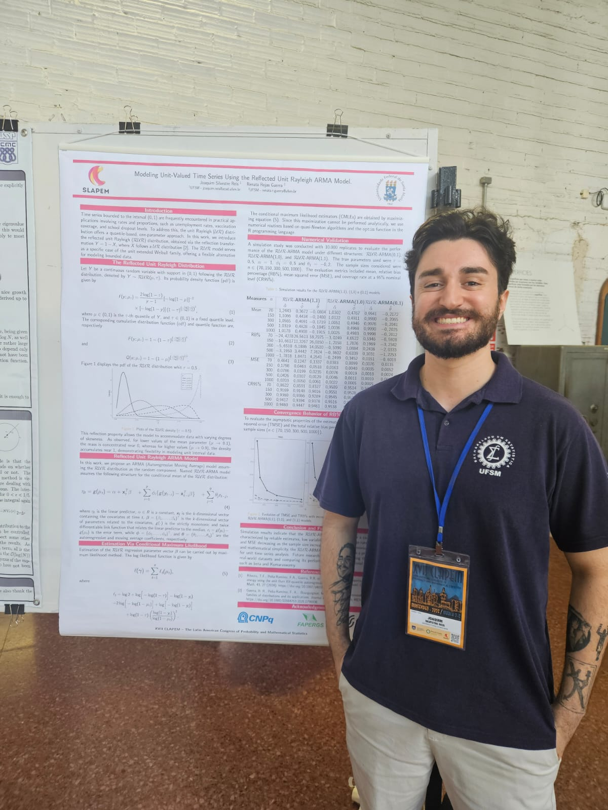
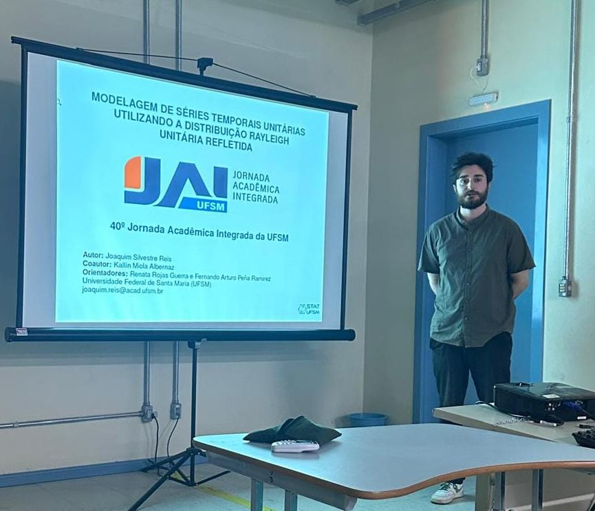
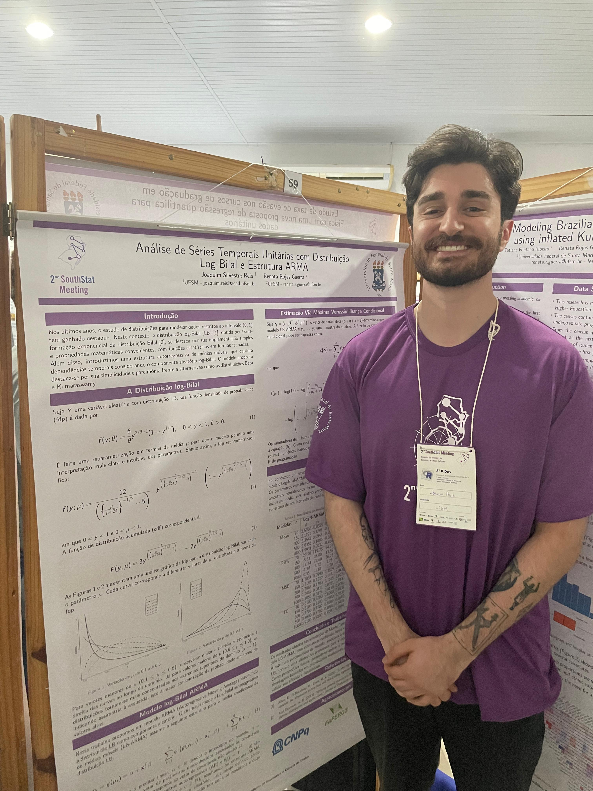
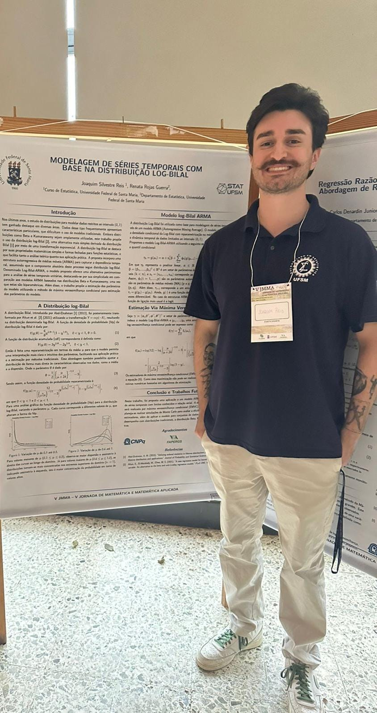

Modelagem estatística
Estruturação de problemas, análise exploratória, inferência e avaliação de modelos com foco em resultados interpretáveis.
Portfólio profissional · 2026
Graduando em Estatística · UFSM
Experiência em análise de dados, Business Intelligence, modelagem estatística e séries temporais.
Explorar trabalhoSanta Maria, RS · Brasil
Sobre
Perfil profissional e áreas de interesse.
Graduando em Estatística pela UFSM, com experiência no desenvolvimento de soluções de Business Intelligence, análise de dados e modelagem estatística em contextos acadêmicos e empresariais.
Interesses técnicos em séries temporais, previsão, automação de processos analíticos, visualização de dados e aplicação de métodos estatísticos a problemas reais.
Especialidades
Métodos estatísticos e ferramentas utilizadas em análise, modelagem, visualização e preparação de dados.
Estruturação de problemas, análise exploratória, inferência e avaliação de modelos com foco em resultados interpretáveis.
Pesquisa e aplicação de modelos de previsão, estruturas ARMA e distribuições para dados no intervalo unitário.
Dashboards, métricas e narrativas visuais que conectam dados a decisões estratégicas de negócio.
Extração, transformação e organização de dados com SQL, R e Python para análises confiáveis e reproduzíveis.
Projetos selecionados
Projetos com código, documentação, metodologia e resultados disponíveis no GitHub.
Desenvolvimento do modelo RUR-ARMA para séries temporais com valores no intervalo unitário. O projeto inclui funções de estimação, simulações de Monte Carlo e aplicações voltadas à análise de taxas e proporções.
Análise do tempo até a graduação de estudantes de Direito em universidades federais da Região Sul do Brasil, utilizando microdados do Censo da Educação Superior. O estudo inclui estimação de Kaplan-Meier, teste log-rank e comparação de modelos paramétricos de sobrevivência.
Espaço para um dashboard com indicadores, modelagem de dados e narrativa visual voltada à tomada de decisão.
Trajetória
Atuações relacionadas a dados, modelagem estatística, Business Intelligence e divulgação científica.
Jun 2025 — presente
Baristo Máquinas e Serviços LTDA
Dashboards interativos em Power BI, métricas em DAX, processos de ETL com SQL e modelos de séries temporais em R para apoiar decisões de negócio.
Out 2024 — presente
Universidade Federal de Santa Maria
Pesquisa em distribuições unitárias e desenvolvimento de novas estruturas ARMA para análise de séries temporais, com produção e divulgação científica.
Fev 2023 — Jan 2024
StatUFSM
Divulgação da estatística por meio de visualizações de dados e conteúdos acessíveis produzidos com RStudio e ferramentas de design.
Pesquisa
Selecione um evento para visualizar o trabalho apresentado e o espaço reservado para a respectiva imagem.
Montevidéu, Uruguai

Santa Maria, RS

Santa Maria, RS

Santa Maria, RS

Contato
Disponível para oportunidades e projetos em Data Science, Analytics, Estatística Aplicada e Business Intelligence.